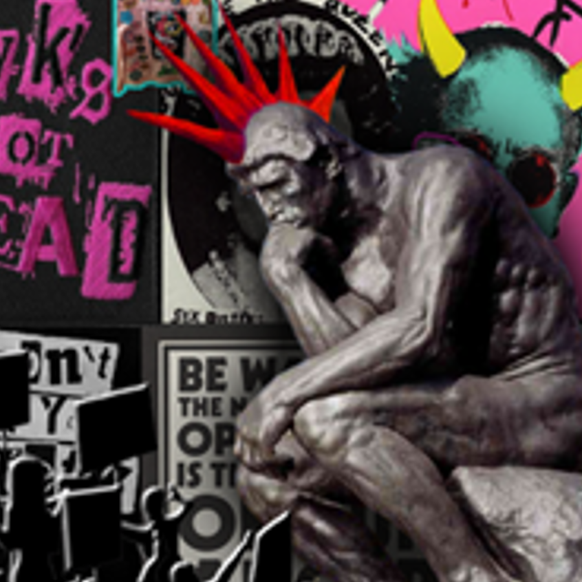
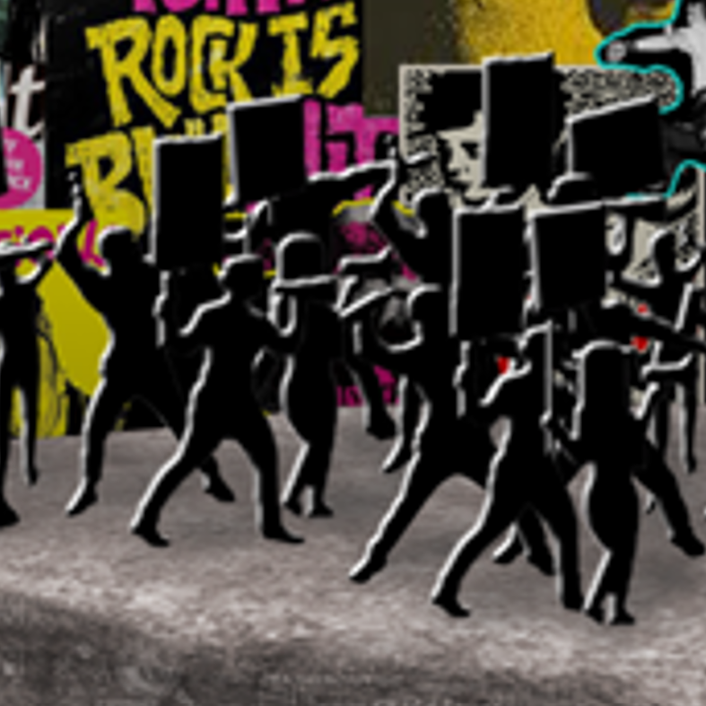

Punk emitido vs Punk entendido
fotomontagem | 2020



Neste trabalho pertendia-se representar um estereótipo cultural que a sociedade atual enfrenta. Neste caso, o tema era a forma como o movimento anarquista Punk era visto e assumido pela sociedade que o via de longe. Acontece que esta tem pouco ou nenhum conhecimento sobre o que este realmente se trata, "atirando" insultos sem fundamento. O pensador com uma crista Punk representa exatamente um movimento que surge de uma forma de pensar e agir pelas pessoas, que é atacado sem antes sequer poder ser compreendido.